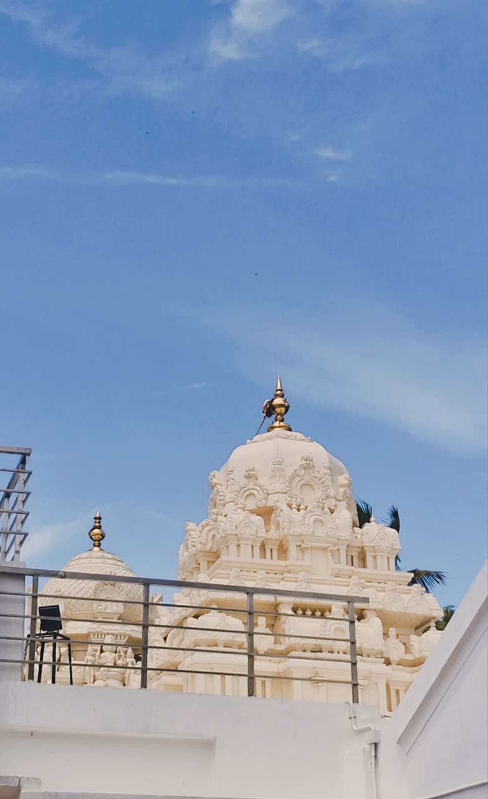
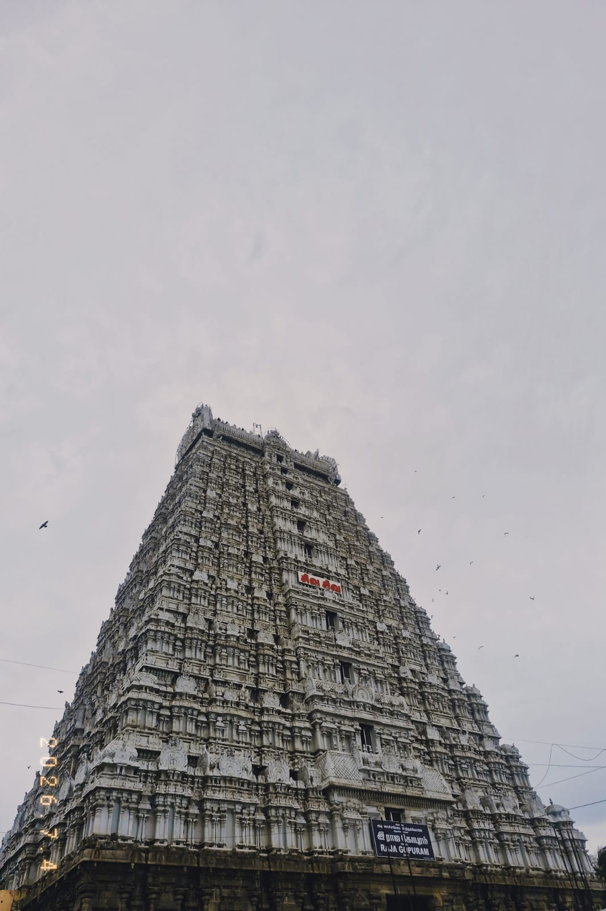
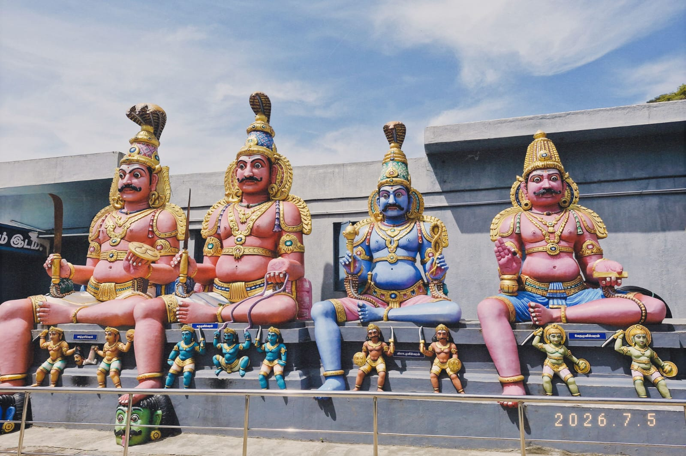
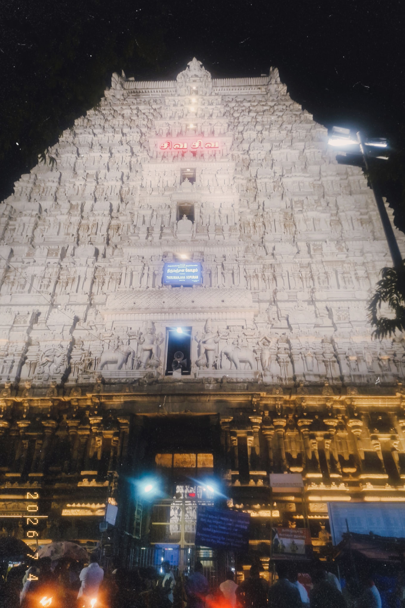
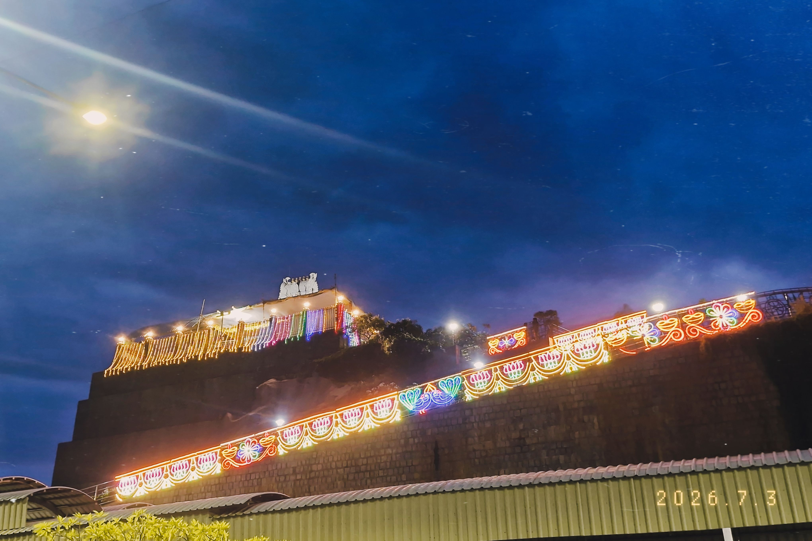
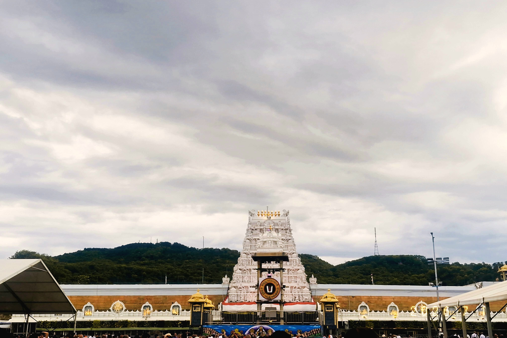

Hi, I'm Bankapalli Karthik
CS Graduate Student & Developer
I am a Computer Science graduate student with a keen interest in software engineering, backend architecture, and core computer systems. My primary focus revolves around understanding how systems scale, optimizing algorithmic efficiency, and building reliable, maintainable software.
Beyond writing code, I enjoy breaking down complex problems—whether that involves analyzing data structure performance, designing intuitive interfaces, or collaborating on engineering challenges. I value clean code, continuous learning, and practical problem-solving.

Education
M.Tech in Computer Science
2026 – 2028IIIT Hyderabad
Computer Science & Engineering
B.Tech in Computer Science
2021 – 2025IIIT Bhubaneswar
Computer Science & Engineering
Sri Chaitanya 7th-12th
2016 – 2021Visakhapatnam-NAD
Schooling & Intermediate(MPC)
Featured Projects
Algorithm Visualizer & Engine
Personal ProjectData Structures & Core Algorithms
Built an interactive tool to demonstrate expression parsing (infix to prefix), operator precedence, graph traversals, and tree structures in real time.
SSD Course Management Portal
Academic ProjectWeb Technologies & Systems
Engineered a responsive, accessible frontend interface featuring sticky navigation, data-dense schedules, and custom CSS styling.
Interests & Hobbies
Picture Gallery

Sri Ramana Maharshi Ashram
Sri Ramanasramam spiritual center and peaceful retreat in Tiruvannamalai.

Arunachalam Temple ~ Raja Gopuram
Dedicated to Lord Shiva, representing the Agni (Fire) element of the Pancha Bhuta Sthalams at the base of Arunachala Hill.

Arulmigu Shri Pachaiamman Temple
Dedicated to Goddess Pachaiamman, renowned for its ties to Sage Ramana Maharshi and its serene landscape.

Thirumanjana Gopuram
Architectural entrance tower of the sacred Arunachaleswarar Temple complex.

Vakulamatha Temple, Tirupati
Dedicated to Goddess Vakulamatha—the foster mother of Lord Venkateswara.
Tirumala Hills (Saptagiri)
The iconic seven peaks in the Seshachalam range housing sacred shrines and ancient geological formations.
Tirupati Mountain Scenery
Scenic panoramic view captured along the Tirumala ghat roads.
Sri Prasanna Anjaneya Swamy
Majestic Hanuman statue located at the 7th mile on the Tirumala ghat road.

Tirumala Venkateswara Temple
Sacred shrine dedicated to Lord Venkateswara on the Venkatadri peak.